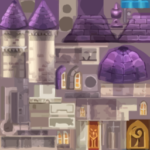
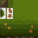
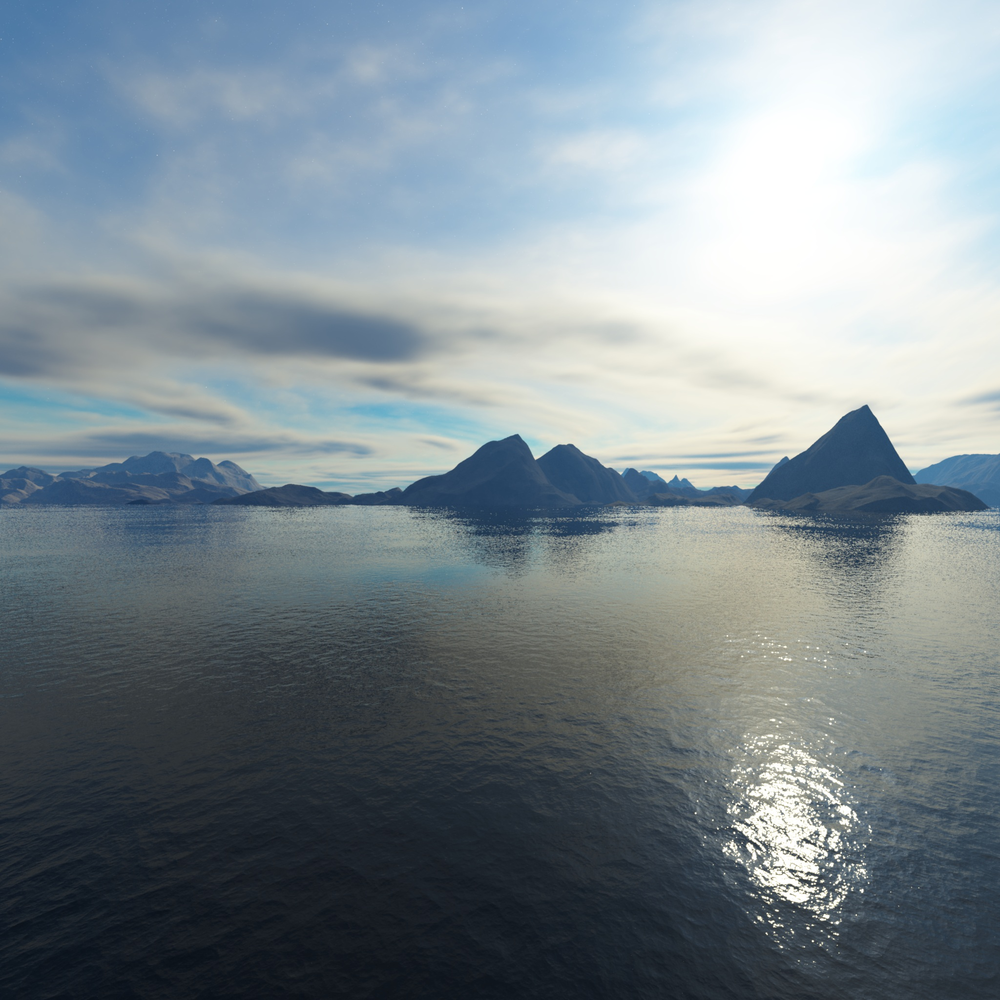

← Portfolio projectsCPT205 · Computer Graphics · 2024
OpenGL Graphics — 2D Birthday Card & 3D Castle
Two distinct CPT205 Computer Graphics exercises: an interactive 2D birthday card and a 3D castle environment built with C++ / OpenGL, including scene geometry, textures and skybox assets. Both are presented as separate original coursework artifacts.
Real coursework visuals

Actual screenshots from my submitted CPT205 report.
Interaction design
- Right-click switches between day and night, with twinkling stars.
- Left-click gradually extinguishes candle flames.
- W/A/S/D move the butterfly; R/r rotates and Q/E scales it.
- Space releases animated balloons; Enter reveals 'Forever 18'.
Developed using C++, OpenGL and FreeGLUT. Original Windows executable requires a compatible Windows graphics environment.
3D Castle — scene development
Purpose. Build a navigable three-dimensional environment using C++ and OpenGL, extending the geometry and input handling explored in the 2D coursework.
Implementation. The scene loads actual OBJ meshes, including a castle environment, bell, lamps and props. The C++ project manages camera viewing, light sources, environmental textures and a six-face skybox.
 Actual render of your
Actual render of your Res/building.obj geometry (untextured VTK preview; not a screenshot of the Windows OpenGL program).Project evidence. You supplied the original models and scene source but not an original castle report PDF. The project showcase documents the scene structure and includes a render derived from the original 3D model.
View castle project showcase PDF ↗Download showcase PDF ↓Download original castle project ↓3D Castle · original geometry and environment resources
The submitted source contains model drawing code, camera/light utilities, textured castle components and a six-face skybox. The examples below are original textures from the castle project, not invented gameplay screenshots. A genuine rendered 3D scene screenshot is not contained in these supplied files.

Castle texture
Wall texture
Skybox frontIn this 3D assignment I worked with scene models, textures, environmental lighting and skybox assets, which extends the geometric transformations and mouse/keyboard interaction explored in the 2D coursework.